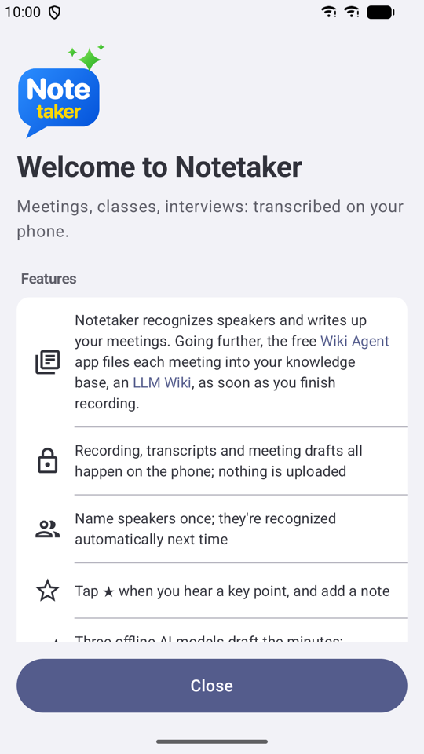
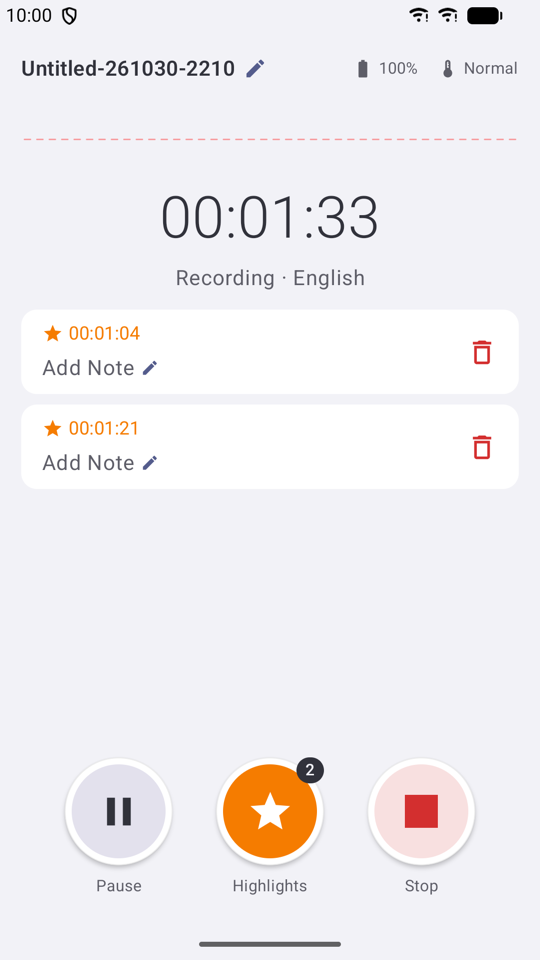
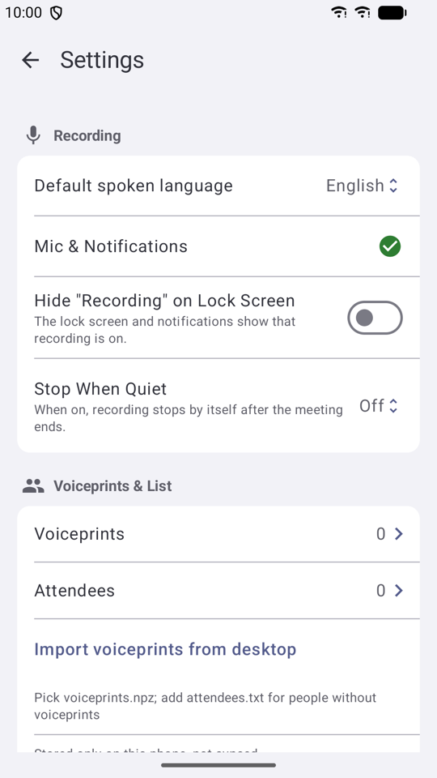

記憶體夠大的手機，可以直接在手機上用 AI 把逐字稿整理成會議紀錄草稿：摘要、重點、待辦事項，每一條都附上逐字稿裡的原句，對不上原句的會自動拿掉，不讓 AI 自己編。會議內容全程留在手機上，不必交給任何雲端服務。
Closed testing on Google Play
Turns meeting recordings into transcripts on your phone and tells you who said what. Recordings, transcripts and speaker voiceprints stay on your phone and are never uploaded.



What it does
- Record: keeps recording with the screen locked or while you use other apps, for meetings of two hours or more. The notification shows the recording time, and you can stop from there.
- Transcripts: when you stop, the recording is transcribed on the phone, with speakers separated and punctuation added. Traditional Chinese, Simplified Chinese and English.
- Remembers speakers: name a speaker once and they are recognised and labelled automatically in later meetings.
- Highlights: tap ★ when you hear a key point and add a note; the transcript marks that moment.
- Minutes: send the transcript to ChatGPT or Claude in one tap (the prompt is built in), or draft the minutes with on-device AI (Gemini Nano, Qwen or Gemma).
- Scheduled recording: set the meeting time; a reminder pops up on time and one tap starts recording.
- One-tap recording: add the Notetaker tile to Quick Settings and start recording from the pull-down panel.
- Export: transcripts are Markdown files. Share them, or have them saved to a folder you choose (for example Google Drive) to build your own knowledge base.
- Foldables: works on both the cover screen and the inner screen, and folding or unfolding never interrupts a recording.
On-device AI minutes: nothing sent to the cloud
On phones with enough memory, AI running on the phone itself turns the transcript into draft minutes: a summary, key points and action items. Every item comes with the original sentence from the transcript, and anything that cannot be matched to the transcript is dropped, so the AI cannot make things up. Your meeting never leaves the phone and no cloud service is involved.
- Gemini Nano: Google's AI built into the phone, no download needed. Requires a phone that supports Gemini Nano (mostly recent flagship models).
- Gemma (3.7 GB): phones with 8 GB of RAM or more (at least 7.2 GB of total memory reported by the system).
- Qwen (2.8 GB): needs a little more headroom (at least 7.5 GB of total memory); a 12 GB phone is recommended.
- Gemma and Qwen are downloaded once on first use (Wi-Fi recommended) and then run fully offline. If your phone does not have enough memory, the app does not offer them, so a draft is never cut off halfway by the system.
- A draft takes a while; stay on the app screen meanwhile. Locking the screen or switching away pauses it, and it resumes when you return.
- If your phone cannot run them, send the transcript to ChatGPT or Claude in one tap instead; the prompt is built in.
Privacy
- Recording and transcription happen entirely on the phone. There is no account and no server.
- Files leave the phone only when you tap Share or Send to ChatGPT or Claude, or when you choose a cloud folder yourself.
- Gemini Nano, built into the phone, sends usage statistics to Google that do not include meeting content. See the privacy policy for details.
Notetaker Privacy Policy (Android):
https://vincentliang1.github.io/notetaker-android/privacy.html
Requirements
- Android 12 or later (64-bit phones).
- Storage: about 550 MB for the app and transcription models; recordings take about 115 MB per hour.
- After installation, Google Play downloads the transcription models (about 430 MB); it asks before using mobile data. You can record before the download finishes, and transcripts are made automatically once it does.
- On-device AI: Gemini Nano needs a supported phone. On other phones you can download Qwen (2.8 GB) or Gemma (3.7 GB) instead.
Try it
Notetaker is in closed testing on Google Play, so you need to be added to the tester list before you can install it. To join or ask a question, email notetaker.vli@gmail.com. If you already have the app, use Settings › About › Report a Problem.